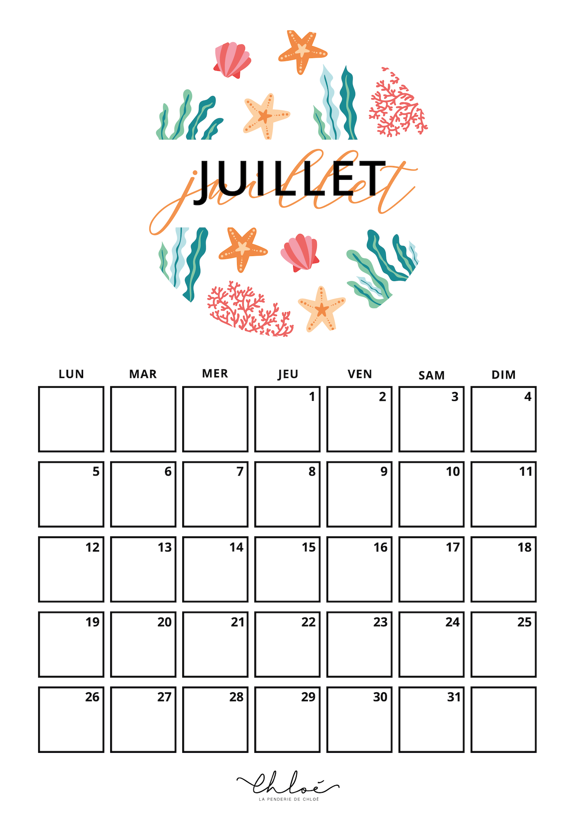

On se retrouve comme à chaque début de trimestre pour les kits d’organisation saisonniers. Et cette fois-ci, on fête la plus belle saison de l’année : coucou l’été ! Au programme, des designs marins, tropicaux et désertiques sont à retrouver sur les kits printables d’été. Si vous ne souhaitez téléchargez que certains éléments des kits d’organisation il vous suffit de vous rendre sur les articles dédiés : les todo-list, les semainiers et les trackers d’humeurs et d’activités. Vous pouvez également découvrir sur le blog mes autres calendriers 2021 à télécharger avec des motifs terrazzo tout aussi colorés ! ⚠️ Copyright © LA PENDERIE DE CHLOÉ – Tous droits réservés – All Rights Reserved. Ces documents sont disponibles gratuitement pour toute usage privé. En revanche ils sont soumis au droit à la propriété intellectuelle. Ainsi il est interdit de les utiliser pour usage commercial, ni même de les modifier. Pour toute demande de personnalisation, n’hésitez pas à nous contacter (hello@lapenderiedechloe.com) en précisant votre projet afin d’établir un devis. Merci pour votre compréhension. Printables Été : le mois de juillet ◆ CALENDRIER JUILLET 2021 